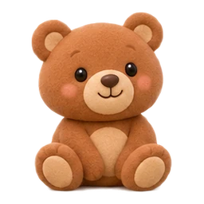
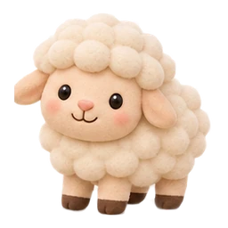

Здесь родители могут послушать все 12 записей и посмотреть их источники. Иллюстрации — сказочные персонажи, созданные специально для сайта с помощью генерации изображений.
Начните с небольшой громкости и послушайте записи перед совместной игрой. Соответствие животным проверено по описаниям источников; технически проверены декодирование и отсутствие цифрового клиппинга. Слуховая проверка не выполнялась. Кролик звучит очень тихо. Для медвежонка источник не указывает точный вид.
Записи не синтезированы и не подменены музыкальными сигналами. Звуки интерфейса и пианино по-прежнему музыкальные. Лицензии Creative Commons ниже относятся к соответствующим аудиофайлам; это не общая лицензия на сайт.
Обработка: фрагмент с 0.45 с, длительность 2.5 с; изменение громкости на -2.327 dB, плавное начало и затухание, моно MP3. Скорость и высота голоса не менялись. Обработанный файл распространяется по указанной лицензии исходной записи.
Обработка: фрагмент с 0 с, длительность 2.61 с; изменение громкости на -9.0 dB, плавное начало и затухание, моно MP3. Скорость и высота голоса не менялись. Обработанный файл распространяется по указанной лицензии исходной записи.
Обработка: фрагмент с 6.35 с, длительность 2.5 с; изменение громкости на -4.685 dB, плавное начало и затухание, моно MP3. Скорость и высота голоса не менялись. Обработанный файл распространяется по указанной лицензии исходной записи.

Мишка
Запись:Bear growl.ogg Автор: Shizhao Лицензия:CC-BY-3.0 Вид по источнику: Ursus sp. — медвежонок, род Ursus; точный вид не указан
Обработка: фрагмент с 0.05 с, длительность 2.0 с; изменение громкости на -11.605 dB, плавное начало и затухание, моно MP3. Скорость и высота голоса не менялись. Обработанный файл распространяется по указанной лицензии исходной записи.
Панда
Запись:pone.0225772.s001.wav Автор: Benjamin D. Charlton, Megan A. Owen, Xiaoping Zhou, Hemin Zhang, Ronald R. Swaisgood Лицензия:CC-BY-4.0 Вид по источнику: Ailuropoda melanoleuca
Обработка: фрагмент с 0 с, длительность 0.542 с; изменение громкости на -11.446 dB, плавное начало и затухание, моно MP3. Скорость и высота голоса не менялись. Обработанный файл распространяется по указанной лицензии исходной записи.
Обработка: фрагмент с 0.45 с, длительность 2.5 с; изменение громкости на 7.981 dB, плавное начало и затухание, моно MP3. Скорость и высота голоса не менялись. Обработанный файл распространяется по указанной лицензии исходной записи.
Обработка: фрагмент с 1.15 с, длительность 2.5 с; изменение громкости на -1.11 dB, плавное начало и затухание, моно MP3. Скорость и высота голоса не менялись. Обработанный файл распространяется по указанной лицензии исходной записи.
Обработка: фрагмент с 0 с, длительность 0.655 с; изменение громкости на -7.812 dB, плавное начало и затухание, моно MP3. Скорость и высота голоса не менялись. Обработанный файл распространяется по указанной лицензии исходной записи.
Обработка: фрагмент с 0 с, длительность 2.194 с; изменение громкости на -7.949 dB, плавное начало и затухание, моно MP3. Скорость и высота голоса не менялись. Обработанный файл распространяется по указанной лицензии исходной записи.

Овечка
Запись:Sheep bleat.ogg Автор: Eviatar Bach Лицензия:CC0-1.0 Вид по источнику: Ovis aries
Обработка: фрагмент с 0 с, длительность 0.482 с; изменение громкости на 12 dB, плавное начало и затухание, моно MP3. Скорость и высота голоса не менялись. Обработанный файл распространяется по указанной лицензии исходной записи.
Обработка: фрагмент с 3.05 с, длительность 2.5 с; изменение громкости на -6.626 dB, плавное начало и затухание, моно MP3. Скорость и высота голоса не менялись. Обработанный файл распространяется по указанной лицензии исходной записи.
Обработка: фрагмент с 0 с, длительность 2.5 с; изменение громкости на -9.0 dB, плавное начало и затухание, моно MP3. Скорость и высота голоса не менялись. Обработанный файл распространяется по указанной лицензии исходной записи.